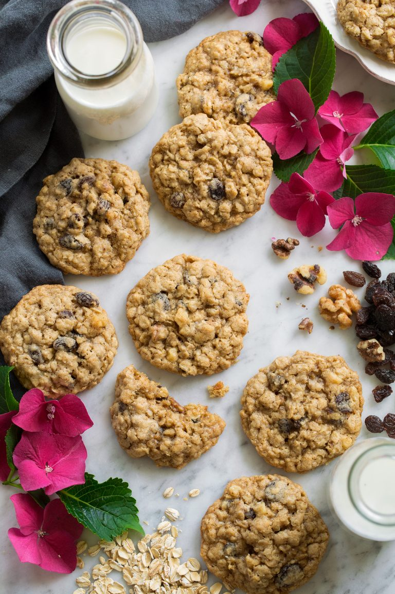

Oatmeal Cookies

Description
Looking for a cookie recipe just as delicious without all of the sugar? You won't really find it here, but something about oatmeal just makes it feel healthier, right?
Ingredients
- 1 1/2 cups (212g) all-purpose flour (scoop and level to measure)
- 1 tsp ground cinnamon
- 1/2 tsp baking soda
- 1/2 tsp baking powder
- 1/2 tsp salt
- 1 cup (226g) unsalted butter, softened slightly (it should still be somewhat cold and firm)
- 1 cup (200g) packed light brown sugar
- 1/2 cup (100g) granulated sugar
- 2 large eggs
- 1 1/2 tsp vanilla extract
- 3 cups (260g) rolled old fashioned oats
- 1 cup (153g) raisins (preferably from a freshly opened package)
- 1 cup (118g) chopped walnuts
Steps
- Preheat oven to 350 degrees. Line rimmed 18 by 13-inch baking sheets with parchment paper or silicone baking mats.
- In a mixing bowl whisk together flour, cinnamon, baking soda, baking powder and salt for 20 seconds, set aside.
- In the bowl of an electric stand mixer fitted with the paddle attachment cream together butter, brown sugar, and granulated sugar until combined.
- Mix in one egg, then blend in second egg and vanilla.
- Add flour mixture and mix just until combined then mix in oats, raisins and walnuts.
- Scoop dough out and shape into 1 1/2-inch balls (or 40 grams each), transfer to prepared baking sheet fitting 12 per sheet and spacing 2-inches apart.
- Bake in preheated oven until golden brown on edges and nearly set (center should look under-baked), about 12 - 14 minutes.
- Let cool on baking sheet for a few minutes then transfer to a wire rack to cool completely. Repeat with remaining dough.
- Store in an airtight container at room temperature.
Recipe from Cooking Classy.
Return to top.
Return to home.